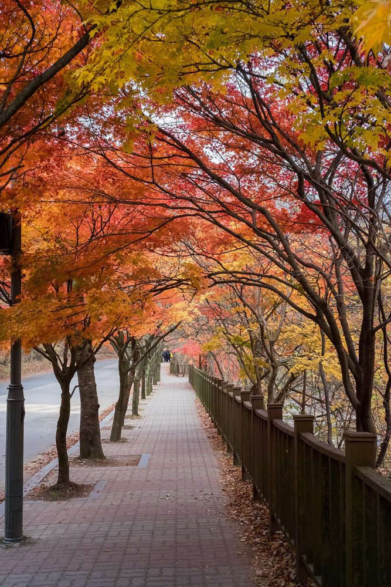
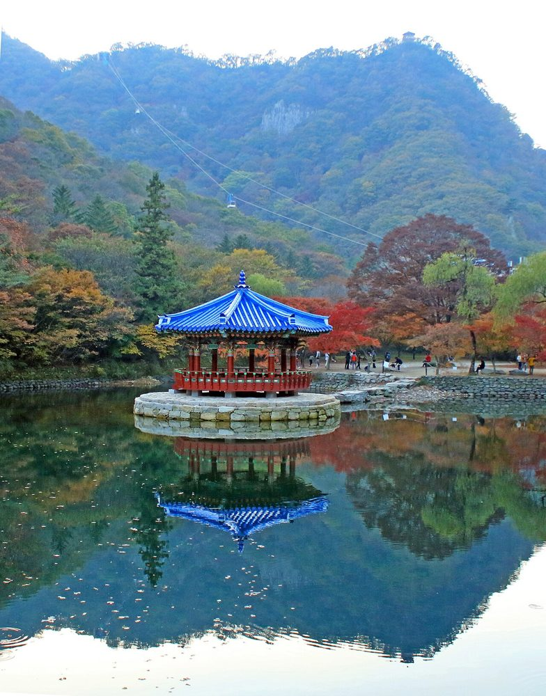

8명 · 내장산 당일 산행
11월 14일(토) 오전 10시 30분
모이는 곳: 우화정 앞
중봉보다 오르막이 훨씬 적은 코스예요. 단풍은 11월 3일에 약 10%였고 절정은 11월 7~11일쯤으로 전망돼서, 14일은 절정 직후로 보여요. 추정이라 비바람이 지나가면 잎이 많이 떨어져 있을 수 있어요.

주말엔 9시만 넘어도 입구부터 줄이 생긴다는 기사가 있어요. 그래서 일찍 출발해요. 아래 시각은 어림이에요.
시외버스는 시간표 사이트 기준이고 토요일 표를 따로 못 찾았어요. 전날 터미널(1688-6676)에 확인해 주세요. 시내버스 시간은 평일 네이버 길찾기 기준이에요. 더 일찍 오려면 광주송정역 KTX 07:41 → 정읍역 08:00(11월 7일 토요일 표 기준, 요금은 자료마다 7,500~8,400원)도 있어요.
시간은 거리로 어림잡은 값이라 걷는 속도에 따라 달라져요. 11월엔 15시까지만 산에 들어갈 수 있어서(공원 공고) 서래봉은 일찍 출발해요.
| 무등산 중봉 | 오늘 코스 | 서래봉까지 | |
|---|---|---|---|
| 오르는 높이 | 약 660m | 약 150m | 약 410m |
| 걷는 길이 | 9~10km | 약 4km | 약 5.7km |
| 가장 높은 곳 | 915m | 약 320m | 약 620m |
| 길 | 돌길, 계단 | 대부분 평지, 벽련암만 오르막 | 가파른 철계단, 바위 |
입구에서 우화정까지 왕복을 걸으면 약 10km가 돼요. 거리는 중봉과 비슷해지지만 오르는 높이는 약 260m로 절반이 안 돼요. 공원 안 유료버스를 타면 줄어요. 높이는 무등산 때와 같은 지형 자료로 쟀고, 실제보다 조금 낮게 나와요.
우화정부터 서래봉까지 높이
연못 위 정자와 물에 비친 단풍을 봐요. 뒤로 케이블카가 지나가요.

일주문에서 내장사까지 약 800m 걷는 길이에요. 오늘의 가장 중요한 볼거리예요.
단풍터널에서 왕복 약 2km, 오르막 약 120m. 서래봉 바위를 가까이 볼 수 있는 곳이에요.
단풍터널 끝에 있는 절이에요. 다 같이 모이는 곳이에요. 문화재 관람료가 있는지는 못 찾았어요.
벽련암에서 왕복 약 1.7km, 오르막 약 260m. 가파른 철계단과 바위가 있어요. 공원 예약제가 11월 3일에 풀려서 예약 없이 갈 수 있어요.
지도로 보면 우화정 근처에서 타요. 타는 시간은 5분, 내려서 전망대까지 300m 걸어요. 왕복 어른 11,000원이라는 후기가 많은데 자료마다 달라요. 현장에서 표를 사고, 9시쯤 운행을 시작한다는 기사가 있어요. 주말엔 1~2시간 기다린다는 후기가 있어 일정에는 넣지 않았어요.
셋 다 입구 상가에 있어요. 아직 예약 전이에요. 토요일 영업시간을 지도에서 읽지 못해서 전화로 확인할 거예요.
.jpg){kind=link}